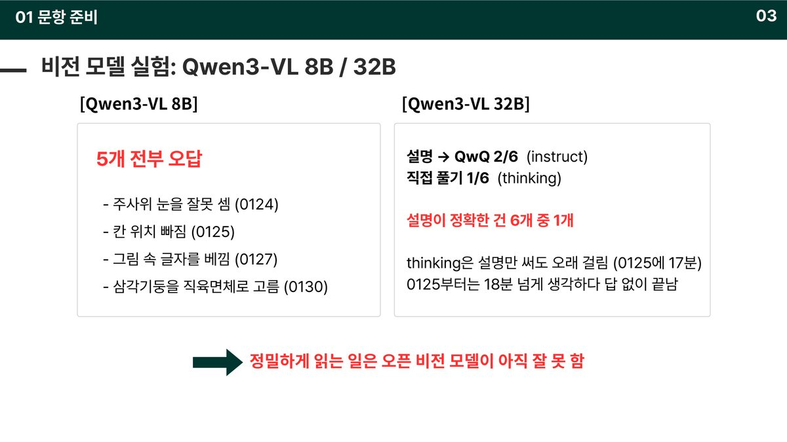
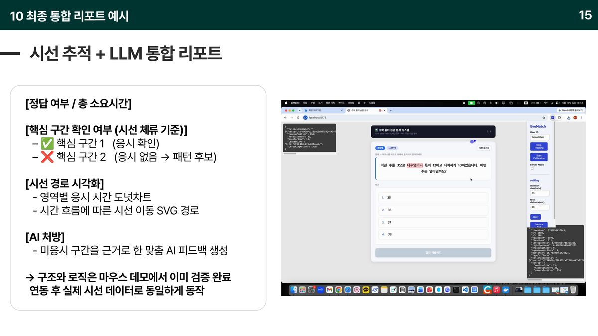
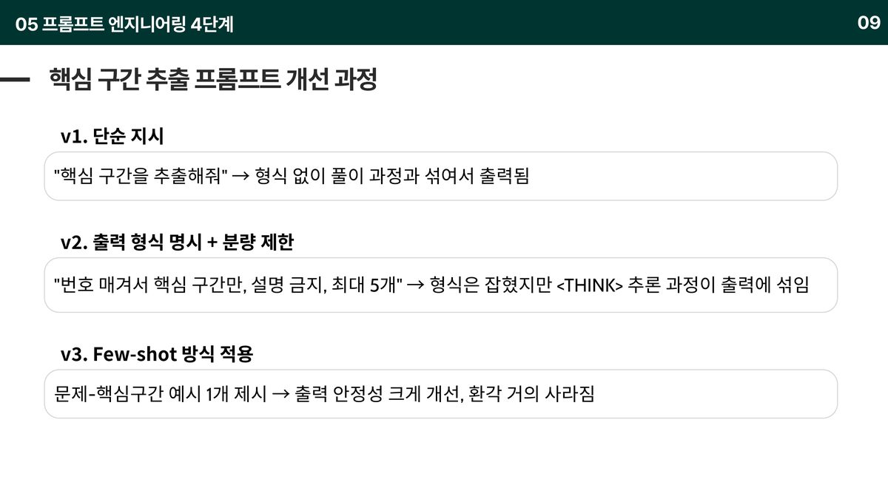
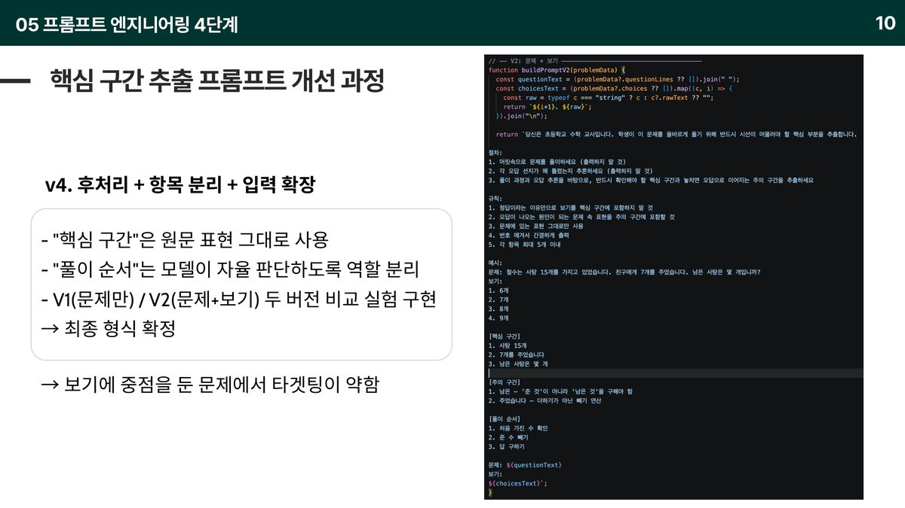
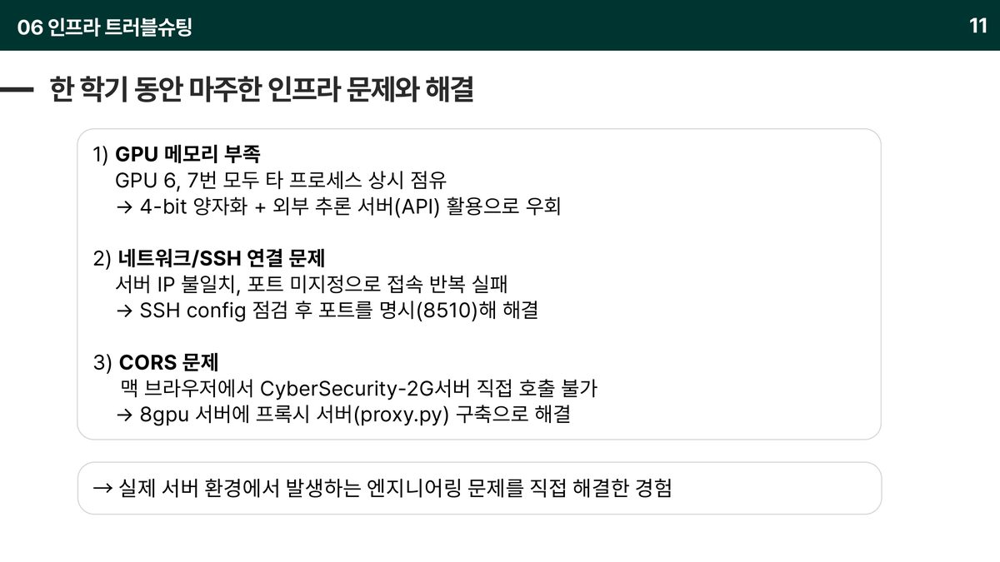
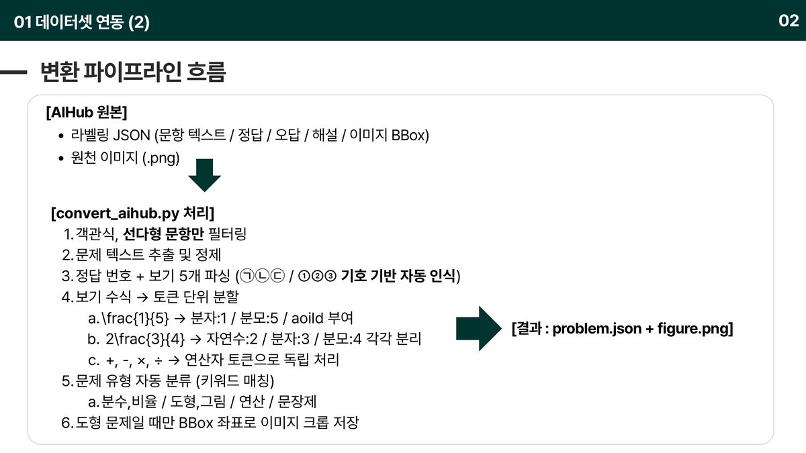
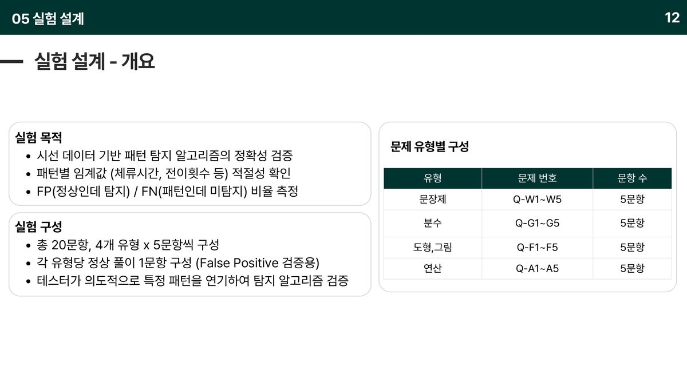
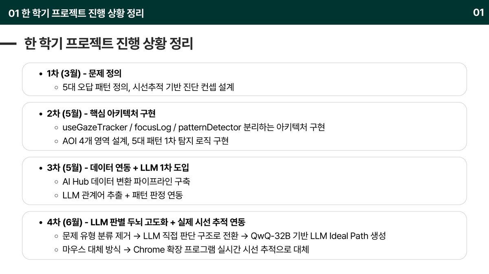

FHTC — 판정의 근거를 끝까지 추적하는 학습 진단 에이전트
math-gaze초등학생이 수학 문제를 푸는 과정을 시선으로 관측하고, 거기서 내린 판정의 근거를 코드가 끝까지 되재는 멀티 에이전트 시스템
- 학생이 왜 틀렸는지를 답이 아니라 시선으로 진단하는 졸업 프로젝트입니다. 3월부터 7차 발표까지 끌고 왔습니다.
- 한 학기를 지나며 프로젝트의 과제가 바뀌었습니다. 처음은 "시선으로 오답 원인을 맞힐 수 있는가"였고, 지금은 "그 판정의 근거를 끝까지 댈 수 있는가"입니다.
- 모델이 낸 판정을 믿지 않고 코드가 근거를 다시 재는 검증 층을 붙였습니다. 근거가 시선 기록과 어긋나면 그 판정은 판단불가로 내려갑니다.


문제 🤔
같은 오답이라도 막힌 자리는 제각각입니다 — 조건을 못 봤거나, 그림과 식을 연결하지 못했거나, 중간에 멈췄거나, 근거 없이 골랐거나. 막힌 자리가 다르면 처방도 달라야 하는데 지금은 전부 "비슷한 문제를 더 주는 것"으로 수렴합니다. 그런데 과정을 보는 것만으로는 부족합니다. 과정 데이터를 LLM에 넘기면 문장은 그럴듯하게 나오지만, 그 문장이 어떤 기록에 근거했는지 추적할 수 없고 틀렸을 때 측정이 틀린 건지 판정이 틀린 건지도 못 가립니다. 실제로 AI 디지털교과서는 2025년 3월 수학에 먼저 들어갔다가 5개월 만에 '교과서'에서 '교육자료'로 격하됐습니다. 기술이 없어서가 아니라 그 판단을 믿지 못해서입니다. 필요한 건 과정을 보는 것이 아니라 근거를 댈 수 있게 과정을 보는 것입니다.
접근 🛠
- 입력을 모읍니다. 문제 전문 · 보기 · 정답 · 고른 답 · 정답 여부, 시선 기록(영역별 응시와 영역 간 전환), 검증된 그림 설명, 캐시된 모범 풀이, 함정 설명, 히트맵.
- 판정은 문항마다 Claude Opus 한 번입니다. 학생이 답을 내면 뒤에서 호출하고 학생은 바로 다음 문제로 넘어갑니다. 9문항이면 9번이고, 리포트를 그릴 때는 추가 호출이 없습니다.
- 모델은 습관마다 예 / 아니오 / 판단불가 중 하나와 근거(시선 기록 줄 번호)를 함께 냅니다. 근거 없이 판정만 내는 것을 구조적으로 막았습니다.
- 코드가 그 근거를 다시 잽니다(
verify.js). 근거 줄 번호가 실제 기록에 있는가, 역행시선 '예'인데 보기를 오간 기록이 있는가, 핵심어누락 '예'인데 그 낱말을 정말 안 봤는가 — 하나라도 어긋나면 그 습관을 판단불가로 내립니다. - 학생에게 갈 문장도 따로 검사합니다. 근거에 없는 보기 번호를 말하거나, "착각했어요"처럼 머릿속 일을 단정하거나, 내부 이름(
q-0-1)을 쓰면 문장을 버리고 코드가 시선 기록에서 직접 잰 사실로 바꿔 내보냅니다. - 호출이 실패하면(180초 초과 · 거절 · JSON 파싱 실패) 다른 모델로 넘기지 않습니다. 오류를 판정 기록에 남기고 그 문항의 습관 칸을 아예 빼며, 검토해 둔 모범 풀이와 함정 설명만 내보냅니다.
결과 📈
판정 → 검증 → 리포트로 이어지는 파이프라인을 세우고, Claude Opus를 판정자로 붙였습니다. 합성 시선 데이터 실험으로 관측 단위가 판정 품질을 가른다는 것을 수치로 보였고(규칙 오탐 4→0, 판단불가 9~11→2~3칸, 회차 변동 4→1칸), 문항별로 애초에 판정 불가능한 습관이 있다는 것까지 찾아냈습니다. 데이터 층에서는 출제 가능 문항을 0 → 109로 열고 편중을 14배 → 1.8배로 낮췄으며, 시선 보정으로 평균 오차를 72px → 38px까지 줄였습니다. 졸업 전시 시연이 가능한 상태입니다.
이 프로젝트에서 제가 한 것 ✍
- Phase 1 아키텍처 분리 —
useGazeTracker훅으로 좌표 수집과 분석 레이어 분리, AOI 4영역 설계 - Phase 2 5대 오답 패턴 탐지 로직 설계 및 구현
- Phase 3
focusLogs시계열 스키마 확정 + 백엔드 전송 구조 - Phase 4 결과 리포트 — 패턴별 true/false/null 3상태 표시
- AI Hub 데이터 변환 파이프라인, LLM 모델 선정·교체, 프롬프트 4단계 개선, 인프라 문제 3건 해결
- 이후 데이터·검증 레인 전담 — 출제 가능 문항 0 → 109, 재발 방지 검사 스크립트 커밋
금융 직무와의 연결 🎯
- AI 품질 관리 — 모델이 낸 판정을 믿지 않고 근거를 코드가 다시 재는 검증 층을 붙였습니다. 근거가 기록과 어긋나면 판정 자격을 박탈합니다. 금융 AI가 요구하는 감사 추적과 같은 구조입니다.
- 여신 · 심사 — "판정이 틀렸을 때 측정이 틀린 건지 판정이 틀린 건지 가린다"는 문제는 모델 리스크 관리가 매번 부딪히는 질문입니다. 합성 데이터로 입력을 고정해 판정만 시험하는 설계로 접근했습니다.
- 디지털 · 데이터 — 모델 선정 · 교체, 멀티 에이전트 파이프라인, GPU · SSH · CORS 인프라까지 LLM 서비스를 실제로 돌린 경험입니다.
기술 선택과 판단 근거 🧭
왜 그 방법을 택했는지, 무엇을 택하지 않았는지 적었습니다.
모델의 판정을 믿는 대신, 모델이 댄 근거를 코드가 다시 재게 했다
LLM이 낸 문장은 그럴듯하지만 틀렸을 때 측정이 틀린 건지 판정이 틀린 건지 가릴 수 없습니다. 그래서 판정과 함께 시선 기록의 줄 번호를 반드시 내게 하고, 코드가 그 줄을 열어 사실인지 확인합니다. 기록은 40줄인데 "근거 52번"이라고 하면 그 자리에서 판단불가가 됩니다. 판정을 고치는 게 아니라 판정의 자격을 박탈하는 방식입니다.
실제 시선 대신 합성 시선 데이터로 먼저 돌렸다
실제 시선으로 실험하면 보고서가 틀렸을 때 시선을 잘못 잰 건지 판정을 잘못한 건지 가릴 수 없습니다. 그래서 완벽한 오답을 재현한 시선 대본을 직접 만들어 넣었습니다. 입력이 완벽해도 판정이 틀리는가를 따로 시험한 겁니다. 임계값을 역산하지 않고 '할 행동'만 옮겼고, 판정기를 쓰지 않는 별도 검증기로 대본이 의도대로 만들어졌는지(9/9)부터 확인했습니다.
문장 단위를 버리고 낱말 단위로 내려갔다
문장 단위로 시선을 잡았을 때는 규칙과 Claude 둘 다 리포트에 쓸 수 없었습니다. 규칙 트랙은 모르면서 단정해 정상 풀이 4건을 습관 있음으로 잘못 찍었고, Claude는 근거가 없다며 9~11칸을 비워 두고 3회 중 4칸에서 답이 바뀌었습니다. 낱말 단위로 내리자 규칙 오탐이 0건, 판단불가가 2~3칸, 회차별 변동이 1칸으로 줄었습니다. 모델을 바꾼 게 아니라 관측 단위를 바꿔서 해결한 문제였습니다.
더 자세히
관심 있는 항목만 펼쳐 보세요.
이 프로젝트가 시작된 배경
사교육에 참여하는 학생 1인당 월평균 60만 4천 원으로 역대 최고이고, 초등학생도 월 50만 1천 원에 참여율은 4명 중 3명입니다. 그런데 같은 기간 중3 수학 기초학력 미달은 14.9%로 2017년 이래 최고치를 찍었습니다. 강의도 교재도 계속 늘어나는데 "이 학생이 정확히 어디서 막혔는가"는 아무도 모릅니다. 학원도 인강도 AI 튜터도 넣는 쪽(input)만 설계하고, 확인은 맞았나 틀렸나로만 하기 때문입니다.
기술 판단 더 보기 4
6/6이 나왔을 때 기뻐하는 대신 경계 사례로 다시 쟀다
낱말 단위 실험에서 6/6이 나왔는데, 그게 실력인지 문제가 쉬웠던 건지 가려야 했습니다. 합성 데이터를 판정 기준과 똑같이 설정했기 때문(문제 0줄, 한 칸 10.5초)에 맞는 게 당연한 조건이었습니다. 애매한 사례로 다시 돌렸고 경계는 아직 못 잡는다는 결과를 그대로 적었습니다.
문항이 그 습관을 잴 수 있는지를 출제 단계에서 거르기로 했다
핵심어누락은 "핵심어를 놓쳤을 때 나오는 값"이 보기에 있어야(함정 보기) 성립합니다. 그런 보기가 없는 문항에서는 학생이 어떻게 풀든 판정이 불가능합니다. 모델 탓이 아니라 문항 탓인 판단불가가 섞여 있었던 겁니다. 핵심어누락은 함정 보기 보유 문항만, 표상연결실패는 그림 문항만, 역행시선은 보기 4개 이상만 — 이런 매핑을 출제 검사로 넣기로 했습니다.
오픈 비전 모델을 포기하고 사람 검증을 끼워 넣었다
QwQ는 글만 읽는 모델이라 그림 문항을 AI Hub 라벨의 이미지 설명으로 풀게 했더니 30문항 중 18문항만 맞혔습니다. 설명 글의 품질이 들쭉날쭉했던 겁니다. Qwen3-VL 8B는 5개 전부 오답이었고(주사위 눈을 잘못 셈, 삼각기둥을 직육면체로 고름), 32B는 설명이 정확한 게 6개 중 1개였습니다. 정밀하게 읽는 일은 오픈 비전 모델이 아직 못 한다고 판단하고, Claude 초안 → 사람 검증 → QwQ 풀이로 순서를 바꿨습니다.
실패하면 다른 모델로 넘기지 않기로 했다
호출이 실패했을 때 백업 모델로 돌리면 리포트는 채워지지만 그 칸이 어느 모델의 판단인지가 섞입니다. 연구용 기록이 망가지는 쪽이 더 비싸다고 봤습니다. 실패는 기록에 남기고 그 칸을 비웁니다.
막혔던 지점과 해결 과정 5
문장 단위에서는 규칙도 모델도 쓸 수 없었다
합성 데이터를 문장 단위로 넣었을 때, 규칙 트랙은 모르면서 단정했고 Claude는 근거가 없다며 비웠습니다. 규칙은 문제 없는 학생을 습관 있음으로 4건 잘못 찍었고, Claude는 예/아니오/판단불가 중 9~11칸을 판단불가로 두고 세 번 돌렸을 때 4칸에서 답이 달라졌습니다. 양쪽 다 리포트에 올릴 수 없는 상태였습니다. 모델을 바꾸거나 프롬프트를 고치는 대신 시선을 낱말 단위로 다시 잡았고, 그러자 오탐 0건 · 판단불가 2~3칸 · 변동 1칸으로 내려갔습니다.
에러가 안 나는 고장이 제일 오래 살았다
데이터 층을 열 때 찾은 문제들은 전부 조용했습니다. 확장이 보낸 시선 좌표의 90%를 3개월간 버리고 있었는데 좌표는 계속 들어오고 로그도 쌓였습니다. 교차 대조 12건이 전부 실패했는데도 exit 0과 빈 결과 파일 때문에 성공으로 기록됐습니다. 문제가 있으면 종료 코드 1을 내는 검사 스크립트를 만들고, 일부러 데이터를 깨뜨려 실제로 걸리는 것까지 확인했습니다.
추적 버튼을 까먹으면 실험이 통째로 날아갔다
실험은 계속 진행되는데 추적 버튼을 누르지 않으면 시선 기록이 0개로 남았습니다. 사람의 실수를 주의로 막는 대신 화면이 열리면 추적이 자동으로 켜지게 바꿨고, 중간에 끊기면 경고 후 다시 연결하도록 했습니다.
모델을 잘못 골랐고, 왜 틀렸는지 분석해서 갈아탔다
초기 후보는 Qwen2.5-Math-7B였습니다. 수학 벤치마크가 높고 4-bit 양자화로 단일 GPU에 올라갔지만, 수식을 푸는 능력은 있어도 "핵심만 추출하라"는 지시를 따르는 능력이 약해 무관한 텍스트를 끝없이 생성했습니다. 도메인 특화 ≠ 지시 이해를 확인하고 QwQ-32B로 교체했습니다. 32B는 로컬에 못 올려 별도 서버의 Ollama를 HTTP로 호출하는 구조로 우회했습니다.
서버에서 막힌 것 세 가지를 직접 뚫었다
① GPU 메모리 부족 — 8GPU 서버의 6·7번이 상시 점유라 양자화와 외부 추론 서버 호출로 우회했습니다. ② SSH 접속 실패 — 서버 IP 불일치와 포트 미지정으로 반복 실패해 config를 점검하고 포트를 명시(8510)했습니다. ③ CORS 차단 — 브라우저에서 추론 서버를 직접 부를 수 없어 8GPU 서버에 프록시(proxy.py)를 세웠습니다.
데이터
c-0-t0-num)화면 · 시각화 더 보기 14












이 결과가 틀렸을 수 있는 지점
- 경계 사례를 아직 못 잡습니다. 시선이 명확한 건은 잡지만 애매한 구간에서는 틀리고, 틀린 세 건의 원인이 서로 달라 한 번에 고칠 수가 없습니다.
- 각 단계가 제대로 됐는지 판정하는 구조가 아직 없습니다. 히트맵이 제대로 찍혔는지, 최종 리포트가 제대로 나왔는지, 안 됐을 때 재시도하거나 빼는 로직이 비어 있습니다. 단계별 게이트와 최종 evaluation 단계를 설계 중입니다.
- 입력 요소별 기여도를 알 수 없습니다. 어떤 요소가 품질을 떨어뜨리는지 가려낼 방법이 없어, 고칠 곳을 고를 때 감에 의존하고 있습니다.
- 성능 평가 기준이 아직 확정되지 않았습니다. 휴먼 테스트 · 다른 LLM을 평가자로 세우기 · 정답 일치율 중 무엇을 기준으로 삼을지 정하는 중입니다.
- 지금까지 결과는 합성 시선 데이터 기준입니다. 실제 학생 데이터로는 아직 검증하지 못했습니다.
- 루브릭을 모델에게 설명하는 프롬프트 기준이 느슨합니다. 실험이 쌓일수록 루브릭을 자동으로 갱신하는 구조를 검토 중입니다.
금융 직무 연결 더 보기
- 운영 안정성 — 호출 실패 시 다른 모델로 넘기지 않고 해당 칸을 비우고 기록에 남깁니다. 결과를 채우는 것보다 판단의 출처를 지키는 쪽을 택한 설계입니다.
- 데이터 품질 통제 — 예외도 로그도 없이 시선 좌표의 90%를 버리던 경로를 찾아내고, 문제가 있으면 종료 코드 1을 내는 재발 방지 검사를 커밋했습니다.
회고
이 프로젝트에서 가장 크게 바뀐 건 무엇을 만드는 프로젝트인지에 대한 제 대답이었습니다. 처음에는 "시선으로 오답 원인을 맞히는 시스템"이라고 생각했는데, 맞히는 것보다 틀렸을 때 어디서 틀렸는지 가릴 수 있게 만드는 일이 훨씬 어렵고 중요했습니다. 합성 데이터를 쓴 것도, 근거 줄 번호를 강제한 것도, 실패하면 다른 모델로 넘기지 않기로 한 것도 전부 같은 이유였습니다 — 원인을 못 가르면 고칠 수가 없기 때문입니다. 개선이 안 되는 진단은 교실에서 쓰이지 않습니다.